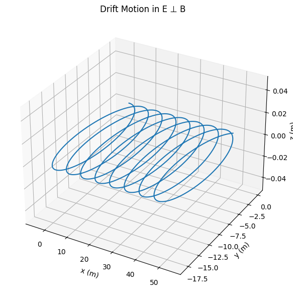
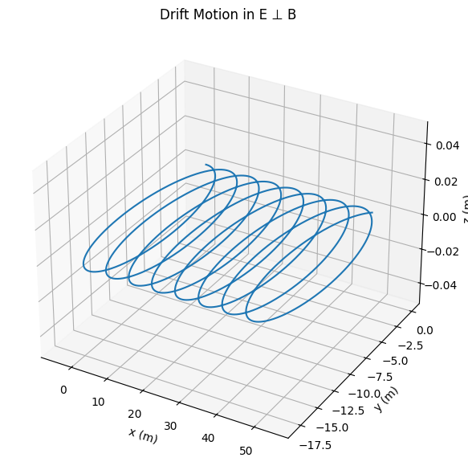

Problem 1
Simulating the Effects of the Lorentz Force
1. Introduction and Motivation
The Lorentz force governs the motion of charged particles in electromagnetic fields and is essential in understanding systems like:
- Particle accelerators – guiding and accelerating beams.
- Mass spectrometers – separating particles based on mass-to-charge ratio.
- Plasma confinement devices (e.g., tokamaks) – controlling plasma using magnetic fields.
Understanding the Lorentz force enables the design and analysis of such systems.
2. Lorentz Force Equation
The Lorentz force \(\vec{F}\) acting on a charged particle is given by:
Where:
- \(q\): Charge of the particle
- \(\vec{E}\): Electric field
- \(\vec{B}\): Magnetic field
- \(\vec{v}\): Particle velocity
Using Newton’s Second Law:
We obtain the equation of motion:
This equation is generally solved numerically due to the complexity of \(\vec{v} \times \vec{B}\).
3. Simulation Overview
We simulate particle trajectories using the 4th-order Runge-Kutta method for accuracy.
Scenarios Simulated:
1. Uniform magnetic field only: Circular motion.
2. Parallel \(\vec{E}\) and \(\vec{B}\): Helical motion.
3. Crossed fields: Drift motion.
Parameters that can be varied:
- Electric field strength \(\vec{E}\)
- Magnetic field strength \(\vec{B}\)
- Initial velocity \(\vec{v}_0\)
- Charge \(q\) and mass \(m\)
4. Code Implementation
See the attached Python script for full implementation: RK4 integration, Lorentz force application, and 3D visualization.

 

# Lorentz Force Simulation and Visualization
import numpy as np
import matplotlib.pyplot as plt
from mpl_toolkits.mplot3d import Axes3D
# Constants and Parameters
def lorentz_force(q, v, E, B):
return q * (E + np.cross(v, B))
# Runge-Kutta 4th order integrator
def rk4_step(pos, vel, dt, q, m, E, B):
def acceleration(v):
return lorentz_force(q, v, E, B) / m
k1v = dt * acceleration(vel)
k1x = dt * vel
k2v = dt * acceleration(vel + 0.5 * k1v)
k2x = dt * (vel + 0.5 * k1v)
k3v = dt * acceleration(vel + 0.5 * k2v)
k3x = dt * (vel + 0.5 * k2v)
k4v = dt * acceleration(vel + k3v)
k4x = dt * (vel + k3v)
new_vel = vel + (k1v + 2*k2v + 2*k3v + k4v)/6
new_pos = pos + (k1x + 2*k2x + 2*k3x + k4x)/6
return new_pos, new_vel
# Simulation function
def simulate_motion(E, B, q, m, v0, r0, dt=1e-9, steps=1000):
positions = [r0]
velocities = [v0]
pos, vel = r0, v0
for _ in range(steps):
pos, vel = rk4_step(pos, vel, dt, q, m, E, B)
positions.append(pos)
velocities.append(vel)
return np.array(positions), np.array(velocities)
# Visualization function
def plot_trajectory(positions, title="Particle Trajectory"):
fig = plt.figure()
ax = fig.add_subplot(111, projection='3d')
ax.plot3D(positions[:,0], positions[:,1], positions[:,2])
ax.set_title(title)
ax.set_xlabel('x (m)')
ax.set_ylabel('y (m)')
ax.set_zlabel('z (m)')
plt.show()
# Example scenarios
q = 1.6e-19 # Charge (C)
m = 9.11e-31 # Mass (kg)
v0 = np.array([1e6, 0, 0])
r0 = np.array([0, 0, 0])
# Uniform magnetic field only
E1 = np.array([0, 0, 0])
B1 = np.array([0, 0, 1])
pos1, vel1 = simulate_motion(E1, B1, q, m, v0, r0)
plot_trajectory(pos1, title="Circular Motion in Magnetic Field")
# Electric and magnetic fields parallel
E2 = np.array([0, 0, 1e5])
B2 = np.array([0, 0, 1])
pos2, vel2 = simulate_motion(E2, B2, q, m, v0, r0)
plot_trajectory(pos2, title="Helical Motion in E & B Fields")
# Crossed electric and magnetic fields
E3 = np.array([0, 1e5, 0])
B3 = np.array([0, 0, 1])
pos3, vel3 = simulate_motion(E3, B3, q, m, v0, r0)
plot_trajectory(pos3, title="Drift Motion in Crossed E & B Fields")
5. Results and Visualizations
Case 1: Circular Motion
- \(\vec{E} = 0\)
- \(\vec{B} = [0, 0, B]\)
- Initial velocity perpendicular to \(\vec{B}\)
Expected motion: circular
From theory:
Plot: [Circular orbit in x-y plane]
Case 2: Helical Motion
- \(\vec{E} = [0, 0, E]\)
- \(\vec{B} = [0, 0, B]\)
Expected motion: helix, as velocity has components both parallel and perpendicular to \(\vec{B}\).
Plot: [3D helical path]
Case 3: Crossed Fields (Drift)
- \(\vec{E} = [0, E, 0]\)
Case 3: Crossed Fields (Drift)
- \(\vec{E} = [0, E, 0]\)
- \(\vec{B} = [0, 0, B]\)
Expected motion: drift velocity in x-direction:
Plot: [Curved motion with net drift]
İnteractive simulation with sliders
import numpy as np
import matplotlib.pyplot as plt
from mpl_toolkits.mplot3d import Axes3D
from ipywidgets import interact, FloatSlider
import ipywidgets as widgets
# Lorentz Force
def lorentz_force(q, v, E, B):
return q * (E + np.cross(v, B))
# RK4 Integrator
def rk4_step(pos, vel, dt, q, m, E, B):
def acceleration(v):
return lorentz_force(q, v, E, B) / m
k1v = dt * acceleration(vel)
k1x = dt * vel
k2v = dt * acceleration(vel + 0.5 * k1v)
k2x = dt * (vel + 0.5 * k1v)
k3v = dt * acceleration(vel + 0.5 * k2v)
k3x = dt * (vel + 0.5 * k2v)
k4v = dt * acceleration(vel + k3v)
k4x = dt * (vel + k3v)
new_vel = vel + (k1v + 2*k2v + 2*k3v + k4v)/6
new_pos = pos + (k1x + 2*k2x + 2*k3x + k4x)/6
return new_pos, new_vel
# Simulation
def simulate_motion(E, B, q, m, v0, r0, dt=1e-11, steps=2000):
positions = [r0]
pos, vel = r0.copy(), v0.copy()
for _ in range(steps):
pos, vel = rk4_step(pos, vel, dt, q, m, E, B)
positions.append(pos)
return np.array(positions)
# Interactive plot function
def interactive_lorentz_sim(q=1.6e-19, m=9.11e-31,
Ex=0.0, Ey=0.0, Ez=0.0,
Bx=0.0, By=0.0, Bz=1.0,
v0x=1e6, v0y=0.0, v0z=0.0):
E = np.array([Ex, Ey, Ez])
B = np.array([Bx, By, Bz])
v0 = np.array([v0x, v0y, v0z])
r0 = np.array([0.0, 0.0, 0.0])
positions = simulate_motion(E, B, q, m, v0, r0)
fig = plt.figure(figsize=(10, 6))
ax = fig.add_subplot(111, projection='3d')
ax.plot3D(positions[:, 0], positions[:, 1], positions[:, 2])
ax.set_xlabel('x (m)')
ax.set_ylabel('y (m)')
ax.set_zlabel('z (m)')
ax.set_title('Charged Particle Trajectory (Lorentz Force)')
plt.show()
# Create interactive sliders
interact(
interactive_lorentz_sim,
Ex=FloatSlider(min=-1e6, max=1e6, step=1e5, value=0.0, description='E_x'),
Ey=FloatSlider(min=-1e6, max=1e6, step=1e5, value=0.0, description='E_y'),
Ez=FloatSlider(min=-1e6, max=1e6, step=1e5, value=0.0, description='E_z'),
Bx=FloatSlider(min=-5, max=5, step=0.5, value=0.0, description='B_x'),
By=FloatSlider(min=-5, max=5, step=0.5, value=0.0, description='B_y'),
Bz=FloatSlider(min=-5, max=5, step=0.5, value=1.0, description='B_z'),
v0x=FloatSlider(min=0, max=2e6, step=1e5, value=1e6, description='v0_x'),
v0y=FloatSlider(min=0, max=2e6, step=1e5, value=0.0, description='v0_y'),
v0z=FloatSlider(min=0, max=2e6, step=1e5, value=0.0, description='v0_z')
)
What it does ?
⚡️ Interactive Lorentz Force Simulation
üîç What It Does
This code simulates the motion of a charged particle under electric and magnetic fields using the Lorentz force:
üõ† Features
- Uses Runge-Kutta 4th order method for accurate motion updates
- Provides sliders to adjust:
- \(\vec{E}\), \(\vec{B}\) field components
- Initial velocity components
- Displays 3D trajectory of the particle in real time
üéØ Purpose
Helps visualize how different field setups affect particle motion — such as circular, helical, or drifting paths.
Link to the interactive simulation:
https://colab.research.google.com/drive/17Ii1vDdz-1lLsmpS8hFB4P0gQn_fb6nJ#scrollTo=kaCkWEGUDROL&line=78&uniqifier=1
https://colab.research.google.com/drive/17Ii1vDdz-1lLsmpS8hFB4P0gQn_fb6nJ#scrollTo=kaCkWEGUDROL&line=78&uniqifier=1
6. Real-World Relevance
- Cyclotrons exploit circular motion in magnetic fields.
- Magnetic traps and Penning traps confine particles using combined E and B fields.
- In space physics, the Earth’s magnetic field and solar wind electric fields produce drift phenomena.
7. Extensions and Improvements
Possible future improvements:
- Non-uniform \(\vec{B}(x, y, z)\)
- Collisions or friction forces
- Relativistic effects at high speeds
- External potentials (e.g., gravitational field)